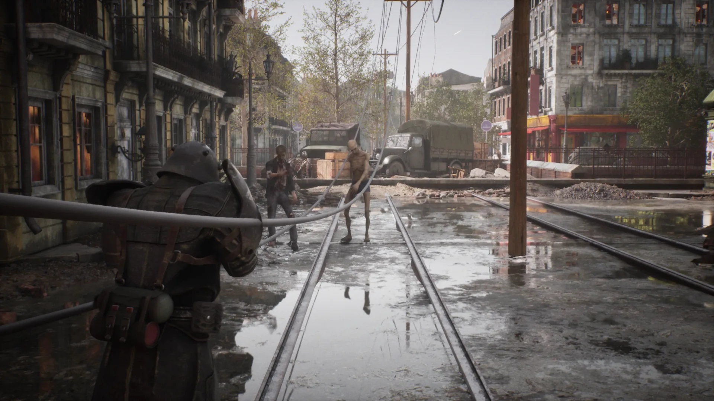
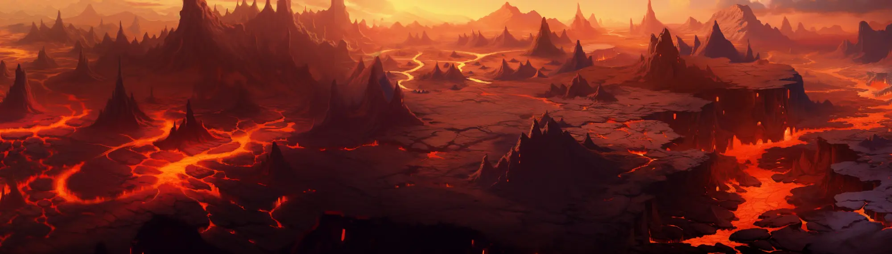

Turn and engage
An idle break, a 180-degree turn on the spot from the clip's root rotation, three shots and the shotgun's own reload.

Animation work · The Dead Parade · Unreal Engine 5
My horde defense puts thousands of zombies and a squad of soldiers on screen at once. The horde plays baked animation on the GPU, every zombie crossfading between its own clips. The soldiers are skeletal meshes with retargeted clips, hand IK on the weapon, recoil, reloads and turns.
In the game
The horde and the squad in battle, played by the game's own simulation and rendered offline at the game's top settings.
Staged with the game's characters
Each character plays a timeline of clips, crossfaded and moved by the clips' own root motion, so every footstep lands where the animator put it. The overlay names each clip as it plays and shows its blend weight through every crossfade. Some show transitions the game doesn't use yet.
An idle break, a 180-degree turn on the spot from the clip's root rotation, three shots and the shotgun's own reload.
A start, walk and jog, a pivot into a backpedal, a stop, two shots, a reload with the magazine out and in, and a look round.
The walk's own knock-back clip blending back into the shamble three times, then the falls, every round with its tracer and blood.
A whole reload, the magazine out and a new one in, then the rifle's butt, with the sprinting zombie's momentum carried into its fall.
The crawl, the climb to its feet and the lurch into a run.
A backpedal's start and stop under fire, and the game's main zombie staggered by a burst, then dropped.
How it's built
A horde on the GPU
Clips baked into textures play on instanced meshes. Each zombie crossfades between its own clips (walk, run, sprint, attacks, knockback, deaths, burning, crawling) at its own phase, so 10,000 are drawn without a skeleton each.
A gait that matches the ground
The drawn walk always matches the ground a zombie covers, never a faster play rate, and noise turns the walking parade into a charge. Soldiers' strides keep pace with their speed too.
Hands on the gun
Two Bone IK puts each soldier's left hand on his weapon's grip, and lets it go over 0.15 s for a reload or a death.
A recoil a shot, a real magazine
One loop of the fire clip is one round, and the machine gunner takes the magazine out of his rifle and drops it when he reloads.
Knockback and ragdolls
The simulation decides each knock's arc and landing, and ragdolls draw it. Thrown zombies lie, then play a getting-up clip.
Retargeted clips
Third-party clips made for the UE4 mannequin are retargeted to the soldiers' UE5 skeleton with IK rigs.
AI-assisted development: I build The Dead Parade with Claude Code as an agentic coding partner, under a curated rules setup. I design each behaviour, choose the clips, judge every transition in play and tune them in the Unreal editor.
